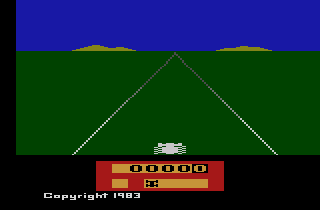
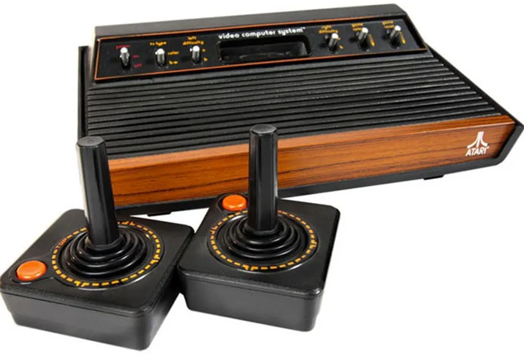
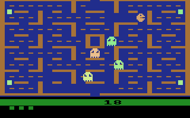
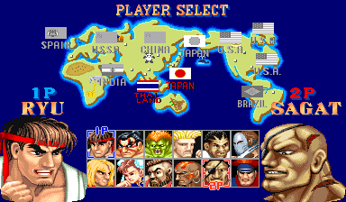
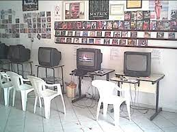
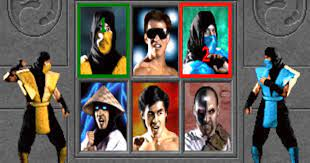
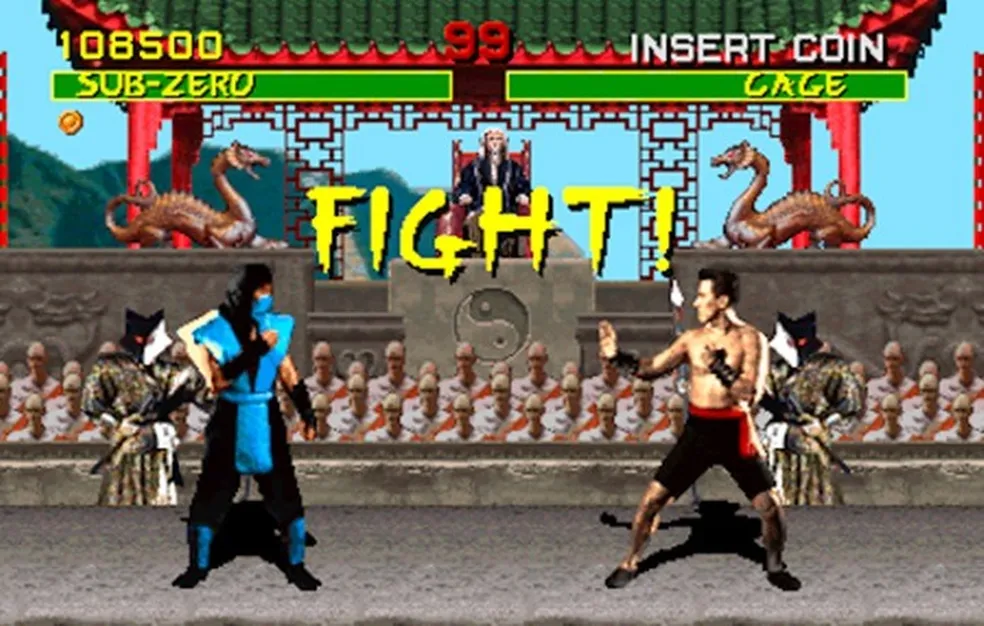
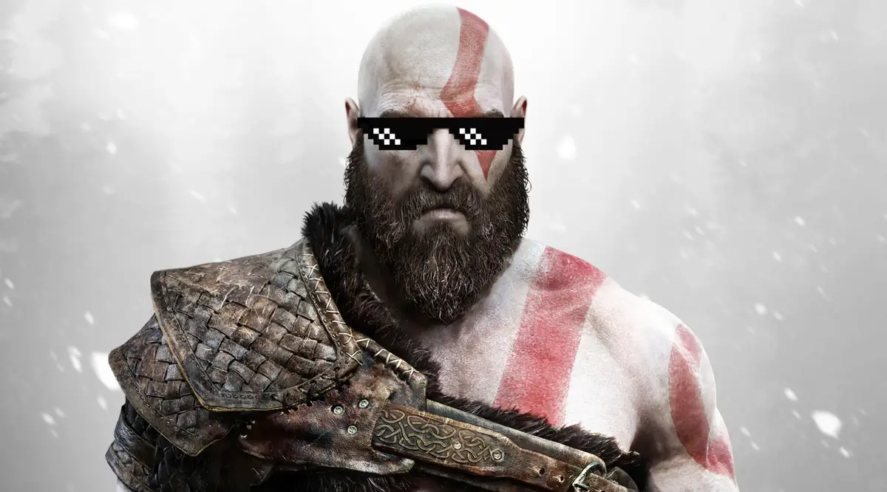

Um pouco sobre minha paixão por games
Nascido em 1979 meu primeiro contato com videogames foi com um Atari 2600 que ganhei estraga de um primo no final dos anos 80
Depois de arrumar o video game ( na época não chamávamos de console ainda ) conheci jogos como, Enduro, River Raid e o classico Pac Man onde a familia toda jogava.
 
Já no ano de 1992 no auge dos meus 12 anos comecei a trabalhar em uma fabrica de solados para calçados. Nesse tempo eu ja não jogava mais o Atari pois estava trabalhando e estudando e não tinha mais tempo.
Logo comecei a ir nas locadoras que ficamvam nas garagens das pessoas e comecei a jogar Street Fighter 2 Champion Edition junto com um primo meu.
 
Após um tempo, esse primo meu comprou um Super Nintendo. Ai não tinha mais jeito, todo final de semana dormia na casa dele.
Esperava ele dormir pra jogar sozinho a noite, não queria ninguém me atrapalhando.
Então começamos a jogar juntos o jogo que até hoje é minha perdição: MORTAL KOMBAT.
Toda aquela violência, gráficos realistas para época, o gameplay, tudo me pegou de jeito.
 
Nessa etapa jogar na casa do meu primo ja não estava me ajudando. Em 1993 comprei meu primeiro video game MEGA DRIVE 3, ja com a fita (sim na época era fita) do Mortal Kombat

E de la pra cá ja são mais de 30 anos jogando. Passando pelo PC, Psone, PS2, Xbox 360, PS4 e agora no PS5.
A paixão não para por ai, ainda temos futuros consoles a serem lançados e jogados.
Escolhi viver varias vidas ao invés de apenas uma.
Obrigado por estarem aqui.
Até mais gamers!!!
